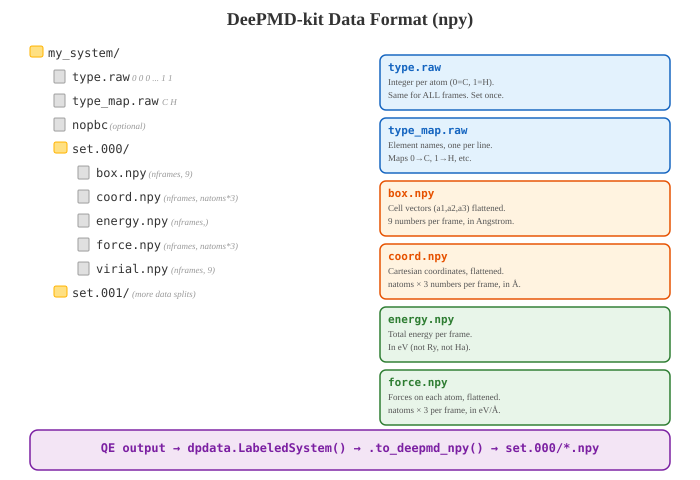
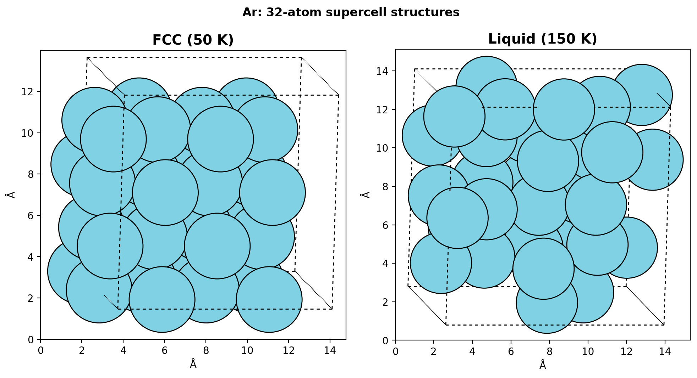
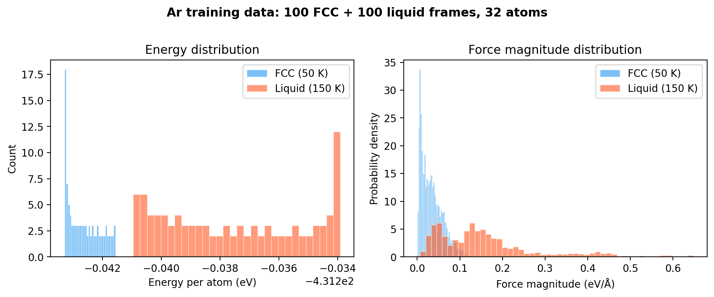
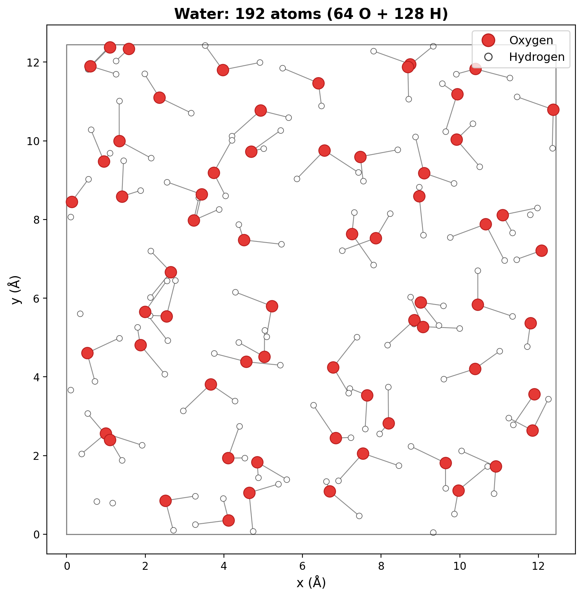
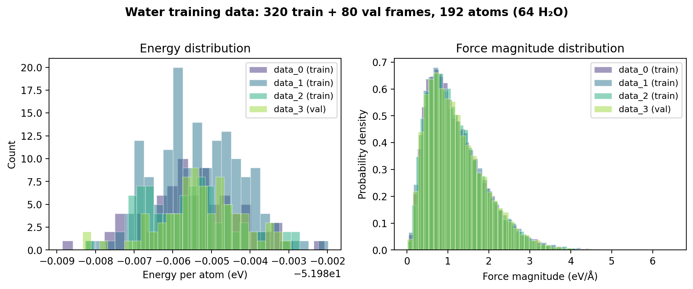

Ch 3: Data Preparation with dpdata#
You ran DFT. Hours on the cluster. Maybe days. You have output files now. An AIMD trajectory, a batch of single-point calculations on perturbed structures, maybe both. Real forces, real energies, computed from first principles at significant cost.
DeePMD-kit cannot read a single one of them.
Not your pw-scf.out. Not your OUTCAR. Not that lovingly organized directory tree you spent an afternoon setting up. DeePMD-kit wants arrays. NumPy arrays. Positions, energies, forces, cell vectors, all in its specific format, its specific directory structure, its specific unit system. eV. Angstrom. No exceptions. No compromise.
So how do you get from here to there?
dpdata. Two lines of Python. That’s the whole bridge.
Setting Up Your Workspace#
Before we touch any data, let’s set up the directory where everything will live. Open your terminal.
$ mkdir -p ~/deepmd && cd ~/deepmd
$ pwd
/home/krishna/deepmd
This is your project root. Everything in this tutorial happens inside here. DFT data goes in, training data comes out, models get trained, LAMMPS runs happen. One directory. You always know where you are.
Let’s set up the Ar example structure. We’ll create subdirectories that mirror how a real DeePMD project is organized:
$ mkdir -p ar/{00_data/{training,validation},01_train,02_test,03_lammps}
$ tree ar/ -L 2
ar/
├── 00_data
│ ├── training
│ └── validation
├── 01_train
├── 02_test
└── 03_lammps
That’s the skeleton. 00_data holds the DeePMD-formatted training and validation data. 01_train is where dp train runs. 02_test for dp test. 03_lammps for production simulations. Numbered so they sort in workflow order. You’ll fill these as we go.
What dpdata Does#
I want you to see this before I explain anything else:
import dpdata
# Read QE output
d = dpdata.LabeledSystem('path/to/qe/output', fmt='qe/pw-scf')
# Write to DeePMD format
d.to('deepmd/npy', 'training_data/', set_size=50)
Two lines. In, out. dpdata reads your DFT output, extracts the cell vectors, atomic positions, energies, forces (and optionally stresses), converts the units, and writes everything into the directory structure DeePMD needs.
Here’s what nobody tells you about that unit conversion. QE uses Rydberg and Bohr internally. DeePMD wants eV and Angstrom. dpdata handles that silently, correctly, without you touching a single number. The DFT code doesn’t matter. The format string changes; the workflow doesn’t.
And that’s the whole trick.
The DeePMD Data Format#
After running d.to('deepmd/npy', 'training_data/'), here’s what shows up on disk:
training_data/
├── type.raw # Element types for each atom (integers)
├── type_map.raw # Element names (C, H, etc.)
├── numb.raw # Number of atoms
├── set.000/ # First batch of frames
│ ├── box.npy # Cell vectors (Nframes × 9)
│ ├── coord.npy # Atomic positions (Nframes × 3N)
│ ├── energy.npy # Total energies (Nframes × 1)
│ └── force.npy # Forces on each atom (Nframes × 3N)
├── set.001/ # Second batch (if enough frames)
│ └── ...
Every file has a purpose. None are optional. Let’s trace through this.
Config Walkthrough
type.raw: A text file with one integer per atom.0= first element in type_map,1= second. For Ar (single element,type_map = ["Ar"]): every line is just0. All 32 atoms are the same. For water (type_map = ["O", "H"]):0 1 1 0 1 1 0 1 1 ...(each O followed by its two H). This file defines identity. Get it wrong and every atom is mislabeled. Every force assigned to the wrong species. Nothing crashes. Everything is quietly wrong.type_map.raw: Element names, one per line:Ar\norO\nH\n. This must match thetype_mapin your DeePMD training config and dpgen’s param.json. Everywhere. Not most places. Everywhere.set.000/box.npy: Cell vectors in Angstrom, flattened. Shape:(Nframes, 9). The 9 values areax ay az bx by bz cx cy cz(the three lattice vectors concatenated).set.000/coord.npy: Atomic coordinates in Angstrom. Shape:(Nframes, 3*Natoms). Atoms ordered by type, matchingtype.raw.set.000/energy.npy: Total energy in eV. Shape:(Nframes, 1). One energy per frame. Total DFT energy, not per-atom.set.000/force.npy: Forces in eV/Angstrom. Shape:(Nframes, 3*Natoms). Same atom ordering as coordinates.
{kind=link}

Fig. 7 The DeePMD-kit data format. Each system directory contains type.raw (atom types), type_map.raw (element names), and one or more set.NNN/ subdirectories with NumPy arrays for cell vectors, coordinates, energies, and forces. The bottom bar shows the typical conversion pipeline from QE output through dpdata.#
Here’s how the key files look across our three example systems:
Ar (32 atoms) |
Water (192 atoms) |
Methane (official tutorial) |
|
|---|---|---|---|
|
|
|
|
|
|
|
|
|
(100, 1) |
(100, 1) |
(160, 1) |
|
(100, 96) |
(100, 576) |
(160, 15) |
Energy/atom |
~-40.4 eV |
~-0.81 eV |
~-4.8 eV |
Source |
QE AIMD |
ICTP 2024 pre-computed |
VASP AIMD |
Notice that methane uses type_map: ["H", "C"] (hydrogen first). That’s a valid choice. The ordering is arbitrary, but once chosen, it’s law everywhere in your pipeline. Our water model puts O first. Neither is “right.” Both are consistent within their respective projects.
The set_size parameter controls how many frames go into each set.*/ subdirectory. With set_size=50 and 200 frames, you get set.000/ through set.003/. DeePMD loads one set at a time during training. For dpgen, the exact set_size doesn’t matter much. Default of 2000 is fine. Don’t overthink this one.
Hands-On: Converting QE Output#
Alright, enough theory. Your QE AIMD outputs are sitting in a dft_runs/ directory:
$ ls dft_runs/
ar_fcc_50K.out ar_liquid_150K.out
import dpdata
d_fcc = dpdata.LabeledSystem('dft_runs/ar_fcc_50K.out', fmt='qe/pw-scf')
print(f"Frames: {len(d_fcc)}") # 100 (one per MD step)
print(f"Atoms: {d_fcc.get_natoms()}") # 32
print(f"Elements: {d_fcc['atom_names']}")
print(f"Energy: {d_fcc['energies'][0]:.4f} eV")
100 frames from one AIMD trajectory. If your QE output is a single SCF (not MD), you’ll see Frames: 1. That’s fine for testing the pipeline, but you need hundreds of frames for training.
Now split into training and validation. 90% for training, 10% held out.
Common Mistake
dpdata v1.0.0 does NOT have train_test_split(). That method exists in newer versions. With v1.0.0, use sub_system() with manual index splitting:
import numpy as np
n = len(d_fcc)
indices = np.arange(n)
np.random.shuffle(indices)
n_val = max(1, n // 10)
d_train = d_fcc.sub_system(indices[n_val:])
d_val = d_fcc.sub_system(indices[:n_val])
d_train.to('deepmd/npy', 'ar/00_data/training/ar_fcc/')
d_val.to('deepmd/npy', 'ar/00_data/validation/ar_fcc/')
Repeat the same process for the liquid trajectory (dft_runs/ar_liquid_150K.out), writing to ar/00_data/training/ar_liquid/ and ar/00_data/validation/ar_liquid/.
Pay attention to that train/validation split. You need that validation set in Ch 4 to tell if your model is actually learning or just memorizing the answer key. I’ve seen people skip this split, train on everything, get a beautiful loss curve, and then deploy a model that falls apart on any configuration it hasn’t seen before. The validation set is your only honest feedback. Not optional. Not a suggestion.
HPC Reality
QE MD output with dpdata can be tricky. dpdata’s qe/pw-scf format sometimes struggles with multi-frame QE MD output. If it only reads one frame from your MD trajectory, use ASE as the bridge:
from ase.io import read
import dpdata
# Read all frames from QE MD output
frames = read('dft_runs/ar_fcc_50K.out', format='espresso-out', index=':')
print(f"ASE read {len(frames)} frames")
# Convert frame-by-frame
for i, atoms in enumerate(frames):
d = dpdata.LabeledSystem(atoms, fmt='ase/structure')
if i == 0:
combined = d
else:
combined.append(d)
combined.to('deepmd/npy', 'ar/00_data/training/ar_fcc/')
This is the approach we used for our Ar AIMD data. 100 FCC frames at 50 K, 100 liquid frames at 150 K, each converted separately and placed in their own directories.
{kind=link}

Fig. 8 Our Ar tutorial data: 32-atom FCC supercell at 50 K (left) and liquid at 150 K (right). Two very different phases, same element. The model needs both to learn the full Ar potential energy surface.#
{kind=link}

Fig. 9 Energy and force distributions in our Ar training data. FCC frames cluster tightly (ordered crystal at low temperature), while liquid frames spread out (disordered, higher thermal motion). 200 total frames, 32 atoms each.#
Hands-On: Converting VASP Output#
Same idea. Different format string. dpdata doesn’t care which DFT code you used, and that’s the whole point.
import dpdata
# Single OUTCAR (possibly multiple ionic steps)
d = dpdata.LabeledSystem('OUTCAR', fmt='vasp/outcar')
print(f"Frames: {len(d)}")
# Multiple OUTCARs from different calculations
d = dpdata.MultiSystems()
for outcar_path in ['calc_001/OUTCAR', 'calc_002/OUTCAR', 'calc_003/OUTCAR']:
d.append(dpdata.LabeledSystem(outcar_path, fmt='vasp/outcar'))
# Write all systems
d.to('deepmd/npy', 'combined_data/')
Key Insight
MultiSystems handles mixed atom counts. If your DFT calculations have different numbers of atoms (72-atom slab and 96-atom slab, for example), a single LabeledSystem can’t hold both. All frames in a LabeledSystem must have the same number of atoms and the same element composition. MultiSystems groups frames automatically, creating separate subdirectories for each unique system. It figures out the sorting. You don’t have to.
Multi-Element Example: Water#
Our water tutorial uses pre-computed data from the ICTP 2024 tutorial (credit: Cesare Malosso). 192 atoms (64 H₂O molecules), split across 4 datasets. Here’s what the data looks like:
{kind=link}

Fig. 10 Water: 192-atom periodic box (64 H₂O). O atoms in red, H in white. This is a multi-element system with type_map = ["O", "H"], meaning O=type 0 and H=type 1.#
{kind=link}

Fig. 11 Energy and force distributions across all four water datasets. 320 training frames + 80 validation frames. Notice the forces are much larger than Ar (hydrogen atoms move fast and feel strong intramolecular forces). The energy range is tighter because all frames come from liquid water at similar conditions.#
The key difference from Ar: water has two element types. The type_map.raw file says O\nH\n, and the type.raw file contains a mix of 0s and 1s matching the atom ordering. Every O atom is 0, every H atom is 1. This is where type_map consistency becomes critical.
The Unit Pitfall#
Before anything else, memorize this table. DeePMD-kit uses the metal unit system throughout. Training data, model output, LAMMPS simulations. Everything.
Property |
DeePMD unit |
|---|---|
Energy |
eV |
Length |
Angstrom |
Force |
eV/Angstrom |
Time |
ps |
Pressure |
Bar |
This is the same as LAMMPS units metal. Not a coincidence. pair_style deepmd requires units metal. Use anything else and the forces silently come out wrong.
dpdata handles the DFT→DeePMD unit conversion automatically. That’s the good news. Here’s the bad news: the day you write a custom script, or read raw .npy files manually, or paste numbers from a QE output into a training set by hand, units will destroy you. Silently.
Quantity |
QE internal |
VASP internal |
DeePMD |
|---|---|---|---|
Energy |
Rydberg |
eV |
eV |
Length |
Bohr |
Angstrom |
Angstrom |
Force |
Ry/Bohr |
eV/Angstrom |
eV/Angstrom |
For QE conversions: 1 Ry = 13.6057 eV, 1 Bohr = 0.5292 Angstrom.
If you bypass dpdata and read raw QE numbers yourself, a unit mismatch will produce a model that’s off by a factor of 13.6 in energy. The training loss will converge. It converges on whatever you give it. The model will learn those wrong numbers just as happily as the right ones.
I want that to sink in. The model trains. The loss decreases. Everything looks healthy. The physics is off by an order of magnitude. Nothing tells you. No warning, no error, no crash. Just a model that predicts forces 13 times too strong. And you won’t know until you run MD and the atoms fly apart in 10 timesteps.
Common Mistake
Verify your converted data. After dpdata conversion, sanity-check the actual numbers:
import numpy as np
e = np.load('ar/00_data/training/ar_fcc/set.000/energy.npy')
f = np.load('ar/00_data/training/ar_fcc/set.000/force.npy')
print(f"Energy range: {e.min():.2f} to {e.max():.2f} eV")
print(f"Force range: {f.min():.2f} to {f.max():.2f} eV/Å")
print(f"Max |force|: {np.abs(f).max():.2f} eV/Å")
Typical sanity checks:
Energies should be negative and in the right ballpark for your system (bulk metals: -3 to -8 eV/atom, molecular: -5 to -20 eV/atom)
Forces should mostly be < 10 eV/Angstrom for equilibrium-like structures. Max forces of 50+ eV/Angstrom suggest something is very wrong.
If all forces are exactly 0.0, you forgot
tprnfor = .true.in QE. Keep reading.
The tprnfor Gotcha#
This is the part the docs skip.
I forgot tprnfor = .true. in my QE input on my second dpgen run. The calculation finished. QE didn’t complain. dpdata read the output and converted it happily. I loaded the .npy files and started training. The loss converged beautifully. I froze the model, ran LAMMPS, launched a nice 300 K NVT simulation. Atoms didn’t move. At all. The energy surface was flat. Zero forces everywhere.
It took me two days to trace that back to one missing line in the QE input.
QE does not print forces by default. Read that again. Seriously. Your expensive DFT calculation runs to completion, produces a perfectly valid output file, and contains zero force information. You need tprnfor = .true. in the &CONTROL namelist. Without it, dpdata reads the output, finds no forces, and either crashes or (worse) fills the force array with zeros.
A model trained on zero forces learns that there are no forces. Anywhere. Ever. It predicts a flat energy surface. Atoms don’t move in MD. Your simulation looks “stable” because literally nothing happens. You might even think it’s working for a few confused minutes before the horror sets in.
I learned this the expensive way. You don’t have to.
Common Mistake
Always include in your QE input:
&CONTROL
tprnfor = .true.
tstress = .true.
...
/
And always verify that forces are non-zero after conversion. There is no good reason to skip this step. Check every single time.
The type_map Consistency Check#
I cannot stress this enough. I’m going to try anyway.
The element ordering must be consistent across your entire pipeline. Training data. Training config. dpgen param.json. LAMMPS input. Everything. If you get this wrong, nothing crashes. Nothing warns you. The model just silently assigns every property to the wrong element.
Here’s the scenario. Your QE input has ATOMIC_SPECIES as H ... O ... (hydrogen first). dpdata reads that and assigns H=0, O=1. But your training config has type_map: ["O", "H"] (oxygen first, O=0, H=1). Now every oxygen atom is being treated as hydrogen. Every hydrogen atom is being treated as oxygen. The model trains. The loss converges. The learning curve looks great.
The physics is completely wrong.
This is like putting the wrong name on every exam. Every grade assigned to the wrong person. Nothing crashes. Everything just quietly produces garbage. Three days of compute on 128 cores. Wasted. And you won’t know until you run a real simulation and the water molecules dissociate in 50 timesteps.
Ask me how I know.
Common Mistake
Always explicitly set the type map when converting:
# For a multi-element system, force the type ordering:
d = dpdata.LabeledSystem('your_qe_output.out', fmt='qe/pw-scf')
d.to('deepmd/npy', 'water/00_data/training/', type_map=['O', 'H'])
Or verify after conversion:
$ cat ar/00_data/training/ar_fcc/type_map.raw
Ar
$ cat ar/00_data/training/ar_fcc/type.raw
0 0 0 0 0 0 0 0 0 0 0 0 0 0 0 0 0 0 0 0 0 0 0 0 0 0 0 0 0 0 0 0
All zeros. 32 atoms, one element. For water it would be a mix of 0 (O) and 1 (H). The point is: look at the file. Don’t assume. Verify.
This one will bite you. Maybe not today. Maybe not on your first run. But the first time you mix data from different sources, or change your param.json, or add a third element, the type_map question will come back. Verify it now. Save yourself a 1 AM debugging session later.
Combining Multiple Data Sources#
In a real dpgen workflow, your training data doesn’t come from one place. It accumulates:
Initial AIMD trajectories (your starting curriculum)
Gap-filled structures from
dpgen init_bulkdpgen-generated data from previous iterations
All different calculations, different directories, sometimes different atom counts. dpdata’s MultiSystems handles the sorting:
import dpdata
ms = dpdata.MultiSystems()
# Add AIMD data
ms.append(dpdata.LabeledSystem('aimd_300K/output', fmt='qe/pw-scf'))
ms.append(dpdata.LabeledSystem('aimd_500K/output', fmt='qe/pw-scf'))
# Add single-point calculations
for f in Path('single_points/').glob('*/pw-scf.out'):
ms.append(dpdata.LabeledSystem(str(f), fmt='qe/pw-scf'))
# Write all at once
ms.to('deepmd/npy', 'combined_training_data/')
Each unique system (defined by atom count + element composition) gets its own subdirectory. DeePMD-kit and dpgen can handle multiple systems in init_data_sys. You just point them at the parent directory and they figure out the rest.
So that’s the whole data pipeline. DFT output goes in one end. DeePMD-ready training data comes out the other. Two lines of Python per data source. The rest is sanity checking. And here’s the thing about that sanity checking: it matters more than the conversion itself. The conversion is mechanical. The verification is where you catch the bugs that would otherwise cost you days.
Clean.
What’s Next#
Your workspace should now look something like this:
$ tree ar/00_data/ -L 3
ar/00_data/
├── training
│ ├── ar_fcc
│ │ ├── set.000
│ │ ├── type.raw
│ │ └── type_map.raw
│ └── ar_liquid
│ ├── set.000
│ ├── type.raw
│ └── type_map.raw
└── validation
├── ar_fcc
│ └── set.000
└── ar_liquid
└── set.000
The type.raw matches your type_map. The forces are non-zero. The energies are in the right ballpark. You’ve checked all three.
Time to train your first model.